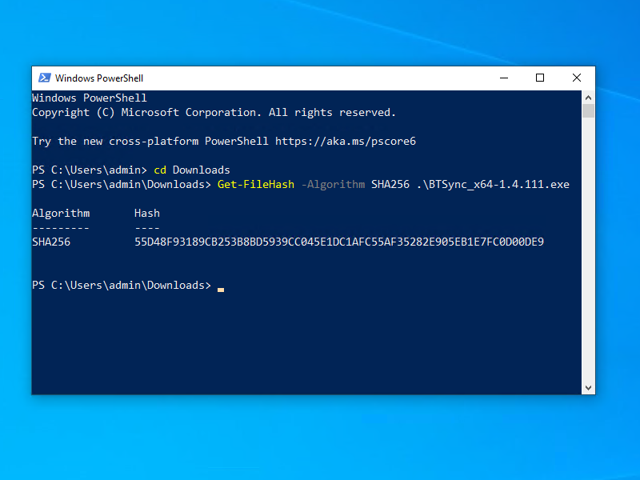

BTSync 1.4.111 on Windows 10
BitTorrent Sync (BTSync) by Resilio, Inc. is a proprietary peer-to-peer file synchronization tool available for Windows, macOS, Linux, Android, and iOS. It can sync files between devices on a local network or between remote devices over the Internet via a modified version of the BitTorrent protocol.
The key to the popularity of this software is that anyone can use it to build a distributed network disk. In some versions of BTSync, a Distributed Hash Table (DHT) can be used for node discovery, thus overcoming the limitations of tracker servers with fixed hostnames or fixed IP addresses.
In this article, we use BTSync 1.4.111 on a Windows 10 platform to synchronize with the Program-Think downloads disk. This provides you with software such as I2P, Tor, VPNGate, Ultrasurf, Freegate, Lantern, and Psiphon.
1. Install
1.1. Download Installer
On your Windows 10 PC, open a browser.
Download the BTSync 1.4.111 executable for 64-bit Windows from the link BTSync-1.4.111.exe.
1.2. Verify Download
Right-click on the Windows start button. Select Windows PowerShell.
In PowerShell, issue the cd command
to change into your Downloads directory:
cd Downloads
Check the SHA256 file hash of your download by issuing the command:
Get-FileHash -Algorithm SHA256 .\BTSync_x64-1.4.111.exe
You should see the result:
55D48F93189CB253B8BD5939CC045E1DC1AFC55AF35282E905EB1E7FC0D00DE9
1.3. Install BTSync
Open Windows File Explorer. Navigate to your Downloads folder.
Double-click on BTSync_x64-1.4.111.exe to launch the installer.
If User Account Control asks you if you want to allow the app to make changes to your device, click Yes.
Unless you have any reason to change them, leave the options at their default values.
Click Install.

BitTorrent Sync should start automatically at the end of the install. If it does not, then start it from the Windows start menu.
Check the box to say that you agree to the End User Licensing Agreement (EULA), and click Get Started.
2. Synchronize
2.1. Create Folder
Open Windows File Explorer. Right-click to bring up the context menu. Select the options to create a new folder.
For example, you might name the new folder
Documents\program-think.
2.2. Add Key
Return to your BTSync window. It should still be running. If not, then start BTSync from the Windows start menu.
From the settings button (gear wheel icon), click Enter a key.
Enter the value BTLZ4A4UD3PEWKPLLWEOKH3W7OQJKFPLG.
Click Next.
Specify the new folder you just created, for example,
Documents\program-think.
Click Select folder.
2.3. Force DHT
We assume you are in an environment where the tracker server is blocked, and you need to force the use of the Distributed Hash Table.
At the end of the row for your folder, click the three dots to bring up the menu. Select Preferences.
- Uncheck the option Use a relay server when required
- Uncheck the option Use a tracker server
- Uncheck the option Search LAN
- Check the option Search DHT network
- Uncheck the option Store deleted files in folder archive
- Check the option Overwrite any changed files
- Uncheck the option Use predefined hosts
Close the preferences window.
Now restart BTSync:
- Close the BTSync application
- After closing it, start BTSync again
2.4. Receive Synchronization
As the synchronization is received, a status icon is displayed.
After the synchronization is complete, you can see the results in Windows File Explorer.
3. Troubleshoot
For a basic introduction, read 扫盲 BTSync（Resilio Sync）——不仅是同步利器，而且是【分布式】网盘 “BTSync (Resilio Sync) — not only a synchronization tool, but also a distributed network disk.”
If you cannot bootstrap the DHT, you may need to read 聊聊 GFW 如何封杀 Resilio Sync（BTSync）？以及如何【免翻墙】继续使用？ “How the GFW blocked Resilio Sync (BTSync) and how to continue to use it without turning over the wall.”